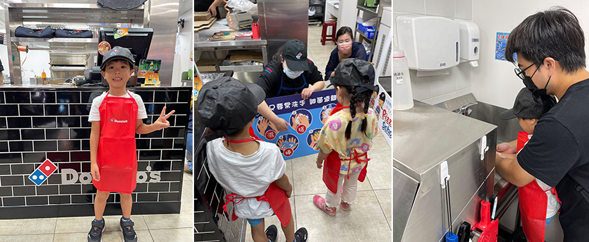
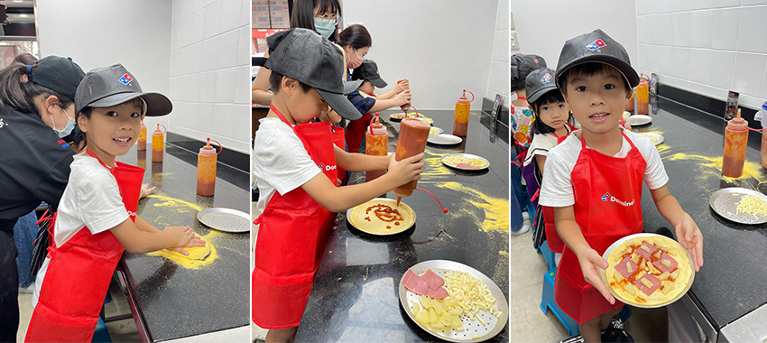
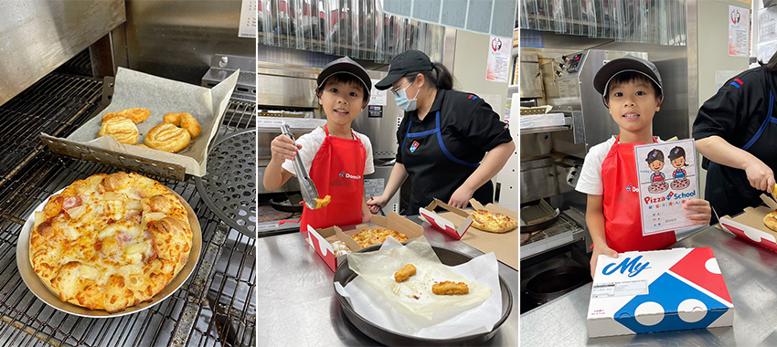
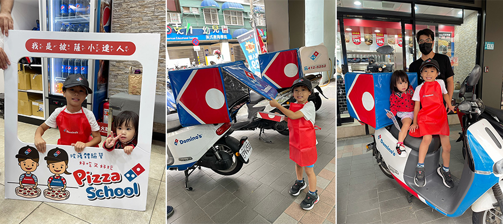

【親子樂事 – 達美樂小小店員體驗】
楊子慧│產品技術一處／聲學品質部
前陣子路過達美樂發現有"小小店長體驗"活動，於是就幫兒子報名，讓兒子可以體驗自己動手做披薩的樂趣。達美樂的體驗營是網路預約制，專為3到12歲小朋友設計的體驗課，需要到達美樂的官網報名，體驗營的場次很多，每一個場次約4到6個名額，可以根據自己有空閒的時段報名，整場活動時間大約30分鐘左右。
|  |
活動一開始，工作人員會先發放達美樂的圍裙和帽子，當兒子換上達美樂工作服後顯得格外專業，非常有趣。接著教導小朋友「洗手的五個步驟」，並講解披薩和健康食物的知識，強調衛生的重要性。在製作披薩之前，工作人員會帶領著小朋友們一起正確洗手後，才開始動手製作披薩，達美樂提供小朋友製作6吋夏威夷口味的披薩，當麵團準備好後，工作人員會教導小朋友如何捏麵團，小朋友需要用手的力量把麵團慢慢的拉大，是需要細心和耐心，當麵團拉大後再小心翼翼的放入鐵盤上，開始擠上醬料，這時小朋友會在披薩上畫上他們喜歡的圖案，隨後放上配料，發揮各自的創造力來設計自己的專屬披薩，披薩製作完成後還要繼續製作千層派和雞柳條，然後一同送入烤箱烘烤。
|  |
等待披薩烤熟的時間約為十分鐘，可以趁這段等待出爐的時間到處拍照留念，當披薩出爐時那誘人的香氣令人垂涎欲滴，看起來相當美味。隨後，工作人員會指導小朋友如何將披薩裝進盒子並進行分割，全程有專業的店員從旁協助，引導孩子每步驟實際操作，對兒子是一個全新而有趣的體驗。
|  |
活動結束後，小朋友們會收到一張參加體驗營的證書，兒子也迫不及待想品嘗自己親手製作的披薩，這次體驗帶給他極大的成就感。這次小小店長和披薩製作的體驗給了兒子一個難忘的經驗，充滿趣味和學習，推薦大家不妨帶著自己的小寶貝來參與，讓寶貝們能在活動中親身體驗動手做披薩的樂趣。
|  |